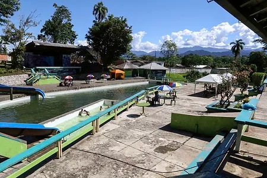
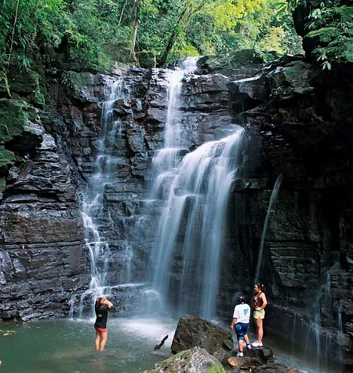
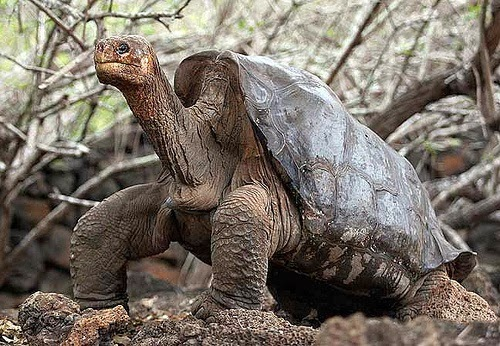
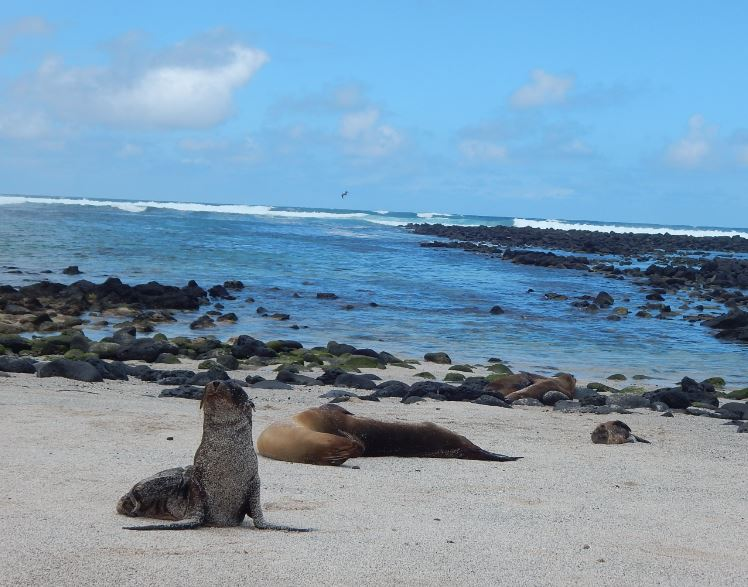

El Oriente y Región Insular Ecuatoriana
El Oriente y Región Insular Ecuatoriana#
Las cavernas Jumandi
Es un balneario diferente porque tiene una caverna natural, que se creé, fue utilizada por el cacique Jumandi en tiempos de la conquista española. La caverna es super divertida de cruzar, te demoras unos 30 minutos y vas siempre con guía. El complejo cuenta además con piscinas y toboganes.

Ciudad de Tena
La moderna capital de la provincia de Napo se llama Tena, tierra de la guayusa y la canela. Tiene un hermoso Malecón junto a los dos Ríos, ademas de contar con la infraestructura para que los Turistas puedan realizar cualquier actividad.
Las Cascadas “Latas”
Disfruta de un paseo por la selva y junto a un pequeño río con abundantes cascadas, las cascadas de “Latas”. En cada una de las cascadas se forman pequeñas piscinas naturales de agua limpia y cristalina. Ideal para pasear y refrescarse en familia.

Caleta Tortuga Negra
La Caleta Tortuga Negra es un estuario de manglares en la costa norte de la Isla Santa Cruz en las Islas Galápagos en el país sudamericano de Ecuador. El parque nacional tiene regulaciones estrictas para proteger este ambiente prístino. Cuenta con una importante extensión de manglar. Este es uno de los lugares donde se reproducen varias especies marinas como las tortugas marinas negras y verdes. Aquí se observan tres tipos de tiburones: el tiburón de aleta negra, el tiburón de Galápagos y la popular tintorera. En ciertas ocasiones también se ven rayas doradas.

La Lobería en Isla San Cristóbal
Uno de los rincones más fotografiados de las Galápagos, es esta hermosa playa de arenas coralinas y aguas turquesas, llamada de esta forma, por la gran cantidad de lobos marinos que frecuentemente se pueden observar, descansando entre las rocas o sumergiéndose en el mar. Además de lobos marinos, en la playa son comunes las tortugas e iguanas marinas, junto a varios tipos de aves, como lo son el canario maría, fragatas y varias especies de pinzones.
